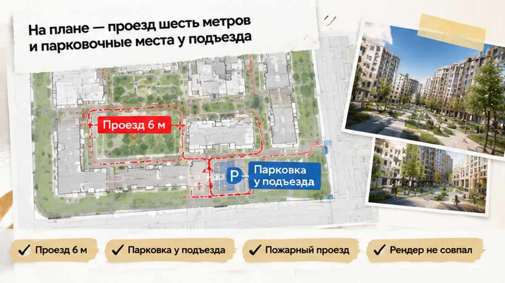
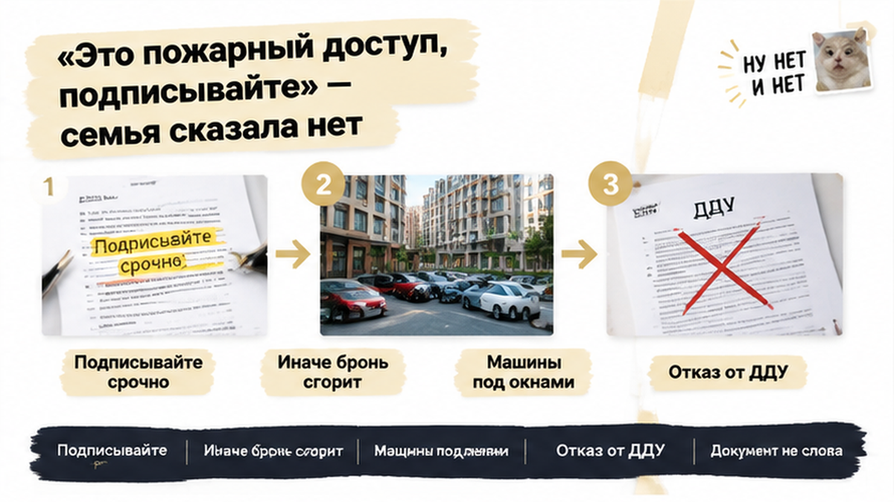
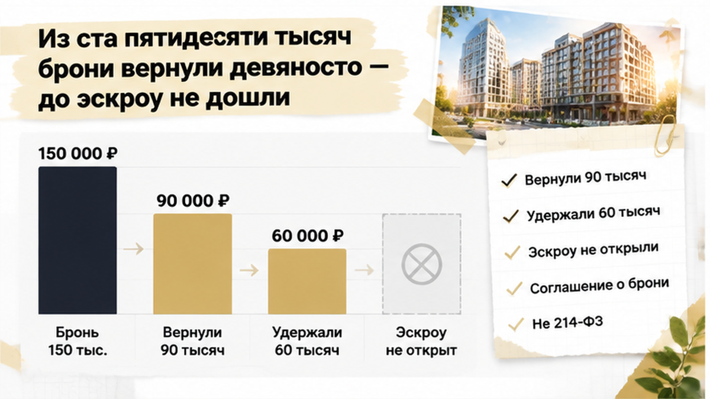
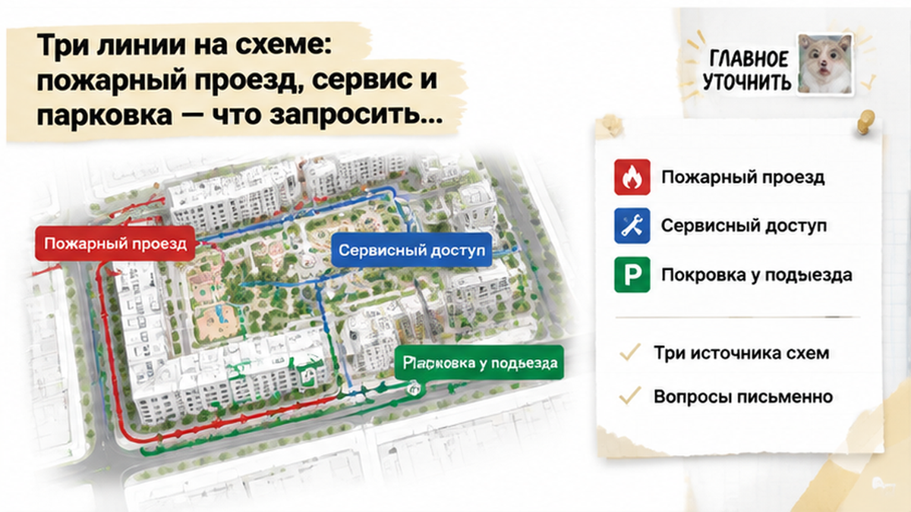

За пять дней до ДДУ тюменская семья с бронью на 150 000 ₽ открыла свежую схему благоустройства и вместо обещанного «двора без машин» увидела проезд шириной 6 метров и парковочные места прямо у подъезда. Двое детей, одобренная ипотека, квартира выбрана ради одного: чтобы мимо крыльца, где дети выходят гулять, не ездили машины. Схему открыли вечером на кухне, когда дети уснули, и картинка со стенда продаж перестала совпадать с документами. Наутро менеджер сказал: «Это пожарный доступ, так положено, подписывайте, иначе бронь сгорит». ДДУ они не подписали, до эскроу не дошли и заплатили за это частью брони.
Я Святослав Шакин, The Риэлтор, Тюмень. Разбираю новостройки по документам, а не по рендерам. Если у вас бронь, скоро ДДУ, а слова из офиса продаж не сходятся с бумагами, напишите мне в Telegram или в MAX. Сверим до подписи, пока всё ещё можно решить спокойно.
Расскажу изнутри, как это обычно выглядит. На стенде продаж зелёный рендер: дорожки, детская площадка, лавочки. Ни одной машины у подъезда.
Менеджер на каждой встрече повторял одно и то же: «Машины уходят в паркинг или остаются по периметру, а внутри живут люди». Родители поверили в этот двор и уже под него выбирали планировку и этаж. Бронь внесена, банк одобрил ипотеку, осталась только подпись. Подвоха от двора никто не ждал: про него ведь «всё сказали».
Обычный покупатель слышит «двор без машин» и представляет тишину под окнами. Профи слышит рекламную фразу. Это описание картинки, а не юридический термин. У одного застройщика это значит «во дворе не бывает ни одного колеса, кроме пожарной машины раз в десять лет». У другого — «постоянной парковки нет, но сервисный проезд есть».
Что на самом деле стоит за этими словами, показывают только документы. Как обещание в офисе расходится с декларацией, я уже разбирал на истории с землёй под ЖК: в брони обещали собственность, а в декларации оказалась аренда.

Отец семьи не искал подвох. Он просто хотел подписать договор с чистой головой. Поэтому они с женой открыли три вещи: проектную декларацию, раздел проекта на сайте и схему благоустройства. Это генплан, на котором нарисовано, что и где будет вокруг дома. Рендер со стенда лежал рядом, в телефоне.
Теперь простыми словами, что это за бумаги. Проектная декларация — официальный документ застройщика о себе и о доме, его требует закон 214-ФЗ. В ней должно быть расписано благоустройство, и оно обязано совпадать с проектом. Изменения застройщик вносит в ЕИСЖС каждый месяц, не позже 10-го числа следующего месяца.
Отсюда ловушка, которую пропускают почти все. Версия, которую вам показали полгода назад, и сегодняшняя могут отличаться. Смотрите дату и номер редакции, а не только красивую картинку.
Семья смотрела свежую редакцию. Сначала всё сходилось: дом, площадки, озеленение. Потом жена молча ткнула пальцем в широкую полосу вдоль дома, которой на рендере не было. Ноутбук развернули к лампе и увеличили масштаб.
На листе из проектной документации через двор шла полоса шириной 6 метров. У дома были размечены парковочные места.
Мама посмотрела и сказала:
«Это же дорога. По ней будут ездить мимо подъезда, где дети выходят гулять».
Обычный покупатель в этот момент либо паникует, либо машет рукой: «да ладно, нарисовали и нарисовали». Расскажу, как на такую схему смотрю я, когда веду сделку.
Шесть метров сами по себе ещё ничего не доказывают. Во дворе обязан быть проезд для пожарной машины, так требует свод правил пожарной безопасности (СП 4.13130.2013). Его ширина зависит от высоты дома. Если дом до 13 метров, хватает 3,5 м. Если от 13 до 46 метров, нужно 4,2 м. Если выше 46 метров, нужно 6 м.
Пока не знаешь высоту дома по проекту, делать выводы рано. Есть и ещё одна деталь: в ширину пожарного проезда можно включать тротуар. Широкая полоса на схеме может оказаться обычной дорожкой для людей, по которой машина проедет, только если что-то горит.
А вот парковочные места у подъезда к пожарным нормам отношения не имеют. Пожарный проезд нужен на случай беды, парковка работает каждый день. Семья платила бронь за двор без машин под окнами, и на бумаге этот двор разошёлся с тем, что показывали в офисе.
Подпись ставят под документом, а не под словами менеджера. Похожий разрыв был в истории, где в брони обещали одно, а в проектной декларации было написано другое.

На следующий день поехали в офис продаж. Менеджер ответил уверенно:
«Это пожарный и сервисный доступ. Так положено, во всех новых домах так».
Отчасти он был прав. Но на простой вопрос, откуда тогда парковочные места у подъезда и будут ли там стоять машины жителей, внятного ответа не прозвучало. Разговор быстро свернул в другую сторону:
«Ипотека одобрена. Подписывайте ДДУ, иначе потеряете и квартиру, и бронь».
Это самый тяжёлый момент во всей истории. За спиной 150 000 ₽ брони и одобренный банк, дети уже поделили комнаты. Всё вокруг толкало подписать и больше об этом не думать.
Изнутри я вижу это так. «Двор без машин» не юридический термин, это описание мечты. Если в проекте двор другой, после подписи спорить придётся с документом, который вы подписали сами. По 214-ФЗ сделку можно оспорить, если данные в декларации ввели покупателя в заблуждение. Только это долгий спор с неясным концом, а не кнопка «выйти».
Семья решила не подписывать ДДУ, пока двор на бумаге не совпадёт с тем, за что они платили бронь. Никто не кричал про обман и не спорил, что пожарной машине нужен проезд. Просто честного ответа про машины под окнами в документах не было.
Такую же логику я видел в случае, где обещанная чистовая отделка на приёмке оказалась голыми стенами. Только там покупатели остановились в конце пути, а здесь в самом начале, пока деньги ещё не ушли на эскроу.

Отказ от ДДУ оформили письменно. С этой минуты решал не менеджер, а текст соглашения о бронировании.
По нему семье вернули 90 000 ₽ из 150 000 ₽. 60 000 ₽ остались у продавца. Это не штраф за «капризы». Это удержание по договору брони: сумму прописали заранее, просто при подписании никто не думал, что этот пункт пригодится. Для семьи с двумя детьми шестьдесят тысяч — совсем не мелочь.
Но главное другое: эскроу-счёт так и не открылся. Ипотеку одобрили, но кредит не выдали, и деньги в стройку не ушли.
Обычный покупатель думает: «Подпишу, чтобы не сгорела бронь». Профи смотрит дальше: после подписи начнутся ежемесячные платежи за квартиру с двором, который на бумаге совсем не такой, как на стенде. Выйти из ДДУ гораздо сложнее, чем из брони. Похожую развилку я разбирал, когда семья остановилась перед ДДУ из-за выросшей ставки: там тоже выбирали между бронью и будущими платежами.
И важная деталь: бронь — это не договор долевого участия, и 214-ФЗ её не регулирует. Сколько вернут при отказе, зависит только от текста соглашения. Полный возврат закон не гарантирует.
Если во дворе внезапно появляется проезд, а бронь уже оплачена, вы бы подписали ДДУ, чтобы не потерять квартиру, или разорвали бы бронь? Напишите в комментариях, где для вас граница: тысячи рублей брони или годы жизни с таким двором.

Сначала о том, чего делать не стоит: объявлять любой проезд во дворе обманом. Пожарный проезд бывает обязательным даже в закрытом дворе, а широкая полоса на плане ещё не значит, что по ней будут ездить жильцы. Но и «так положено» — не ответ, пока вы сами не увидели, что нарисовано.
Расскажу изнутри, как я смотрю такой двор до подписи:
Не уверены, что нарисовано на вашей схеме — пожарный проезд или будущая парковка? Пришлите генплан и декларацию в Telegram или MAX, посмотрим вместе до ДДУ.
Эта семья не проиграла. Шестьдесят тысяч — больно. Но это цена одной остановки, а не двадцати лет ипотеки за чужой двор.
Они остановились не в панике. Просто вовремя открыли документы и сверили их с тем, что слышали на встречах. Пока деньги не ушли на эскроу, у вас тот же выбор: не подписывать ДДУ только ради того, чтобы не сгорела бронь, пока двор на бумаге не совпадёт с тем, ради чего вы вообще выбрали этот дом.